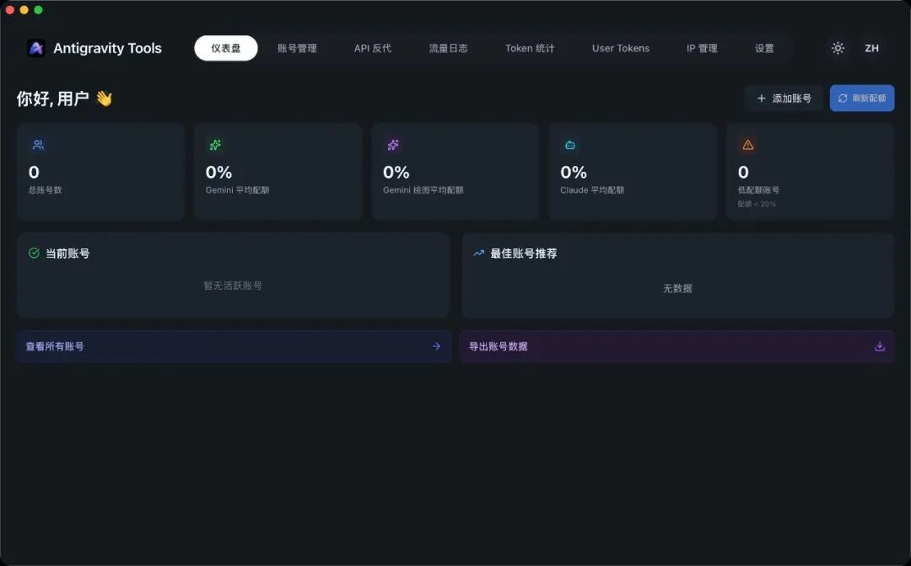
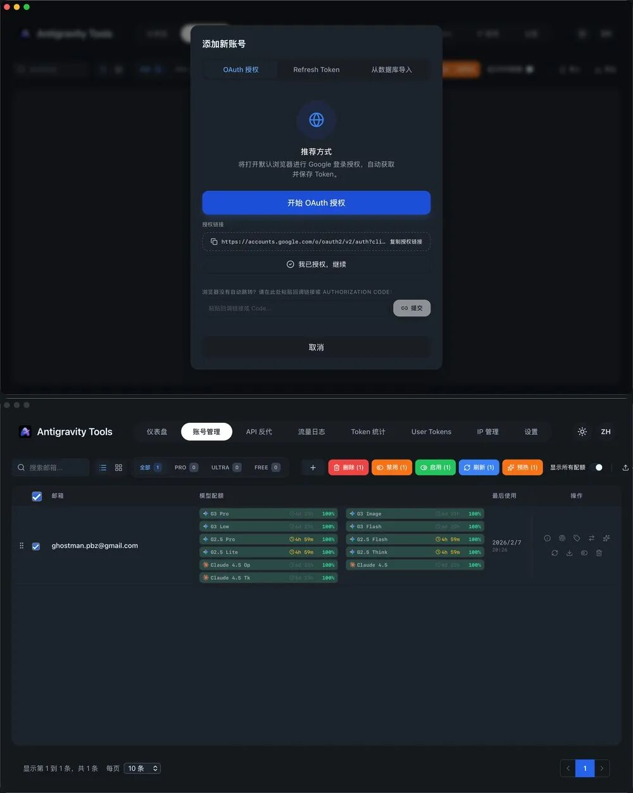
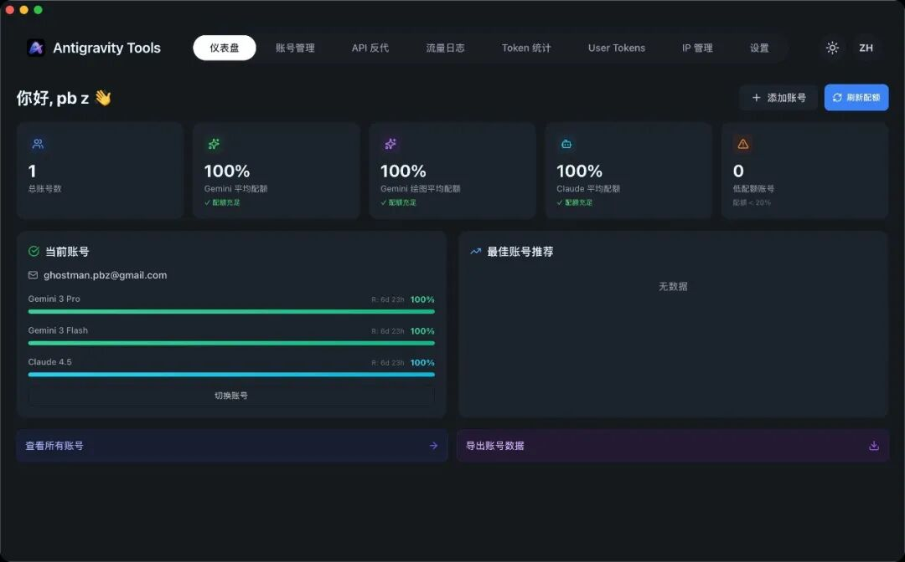
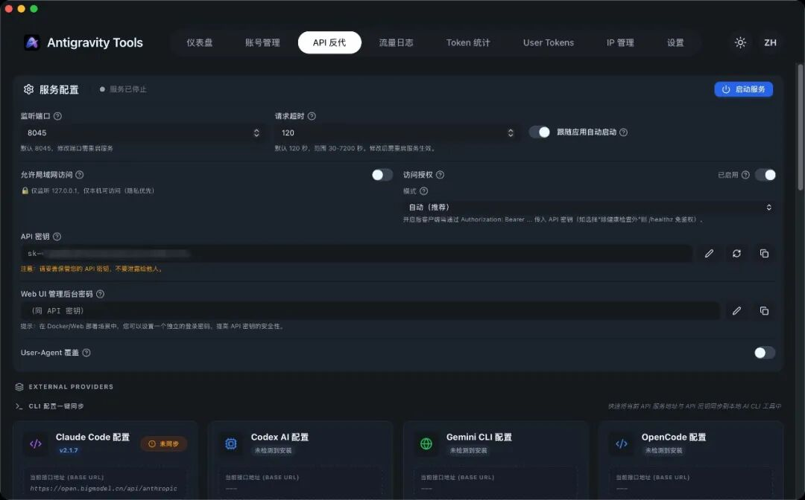
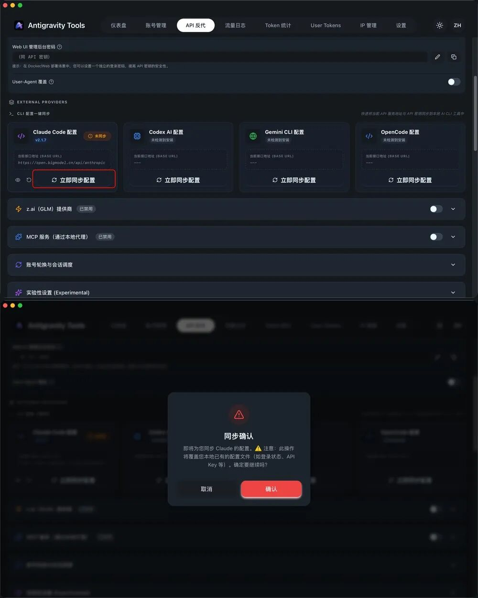
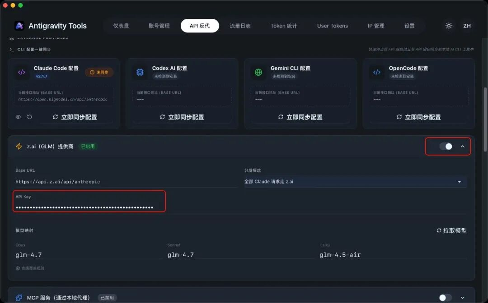

在 AI 应用日益增长的今天，开发者往往需要同时管理多个服务账号（如 OpenAI、Claude、Gemini 等），并期望将这些服务统一调度、并在本地或服务器上稳定运行。
Antigravity-Manager 正是这样一款强大的开源工具，它不仅具备专业的账号管理功能，还支持协议转换、中继代理等高级功能，可以与 Claude Code CLI 等客户端无缝集成，让你的 AI 调用更稳定、更智能。
一、Antigravity-Manager 是什么？
Antigravity-Manager 是由社区开发的一款跨平台（Windows / macOS / Linux）桌面应用，用于：
🧠 账号管理与一键切换 多个 AI 服务账号； 🚀 协议转换与反代代理，兼容 OpenAI、Anthropic（Claude CLI）和 Gemini 等； ⚙️ 智能调度与模型路由，实现配额管理和请求优先级调度。
简而言之，它是一个“全能 AI 账号管家 + 本地反代服务端”，帮助你构建个人或团队级的 AI 调用网关。
二、为何使用“账号管理”？
在多个 AI 平台同时使用时，你可能面临这些痛点：
📉 单一账号配额耗尽导致请求失败； 🔁 切换账号繁琐、缺少一体化管理； 🔒 难以实时查看每个账号的配额与状态； 🧠 结合 CLI 工具时，没有统一反代入口。
Antigravity-Manager 的账号管理（Account Management）模块正是为了解决这些问题设计的，它提供了 OAuth 授权、Token 导入、403 自动标注、账号状态健康监控等全套功能。
三、安装 Antigravity-Manager
安装方式非常灵活，覆盖桌面以及服务器环境。
✔️ 方式 1：桌面安装（推荐）
macOS / Linux（推荐）
如果你已安装 Homebrew：
brew tap lbjlaq/antigravity-manager https://github.com/lbjlaq/Antigravity-Manager
brew install --cask antigravity-tools
安装完成后直接运行客户端进入可视化管理界面。
🪟 方式 2：手动下载安装
访问 GitHub Releases 页面，下载对应系统的安装包：
📦 macOS：.dmg
💻 Windows：.msi / .zip
🐧 Linux：.deb / AppImage
（支持 Apple Silicon、Intel 等主流架构）
🐳 方式 3：Docker 部署（服务器 & NAS）
如果希望在 NAS/服务器长期运行，可参考：
docker run -d \
--name antigravity-manager \
-p 8045:8045 \
-e API_KEY=sk-your-api-key \
-e WEB_PASSWORD=your-login-password \
-v ~/.antigravity_tools:/root/.antigravity_tools \
lbjlaq/antigravity-manager:latest
#### 🔐 鉴权逻辑说明
* **场景 A：仅设置了 `API_KEY`**
- **Web 登录**：使用 `API_KEY` 进入后台。
- **API 调用**：使用 `API_KEY` 进行 AI 请求鉴权。
* **场景 B：同时设置了 `API_KEY` 和 `WEB_PASSWORD` (推荐)**
- **Web 登录**：**必须**使用 `WEB_PASSWORD`，使用 API Key 将被拒绝（更安全）。
- **API 调用**：统一使用 `API_KEY`。这样您可以将 API Key 分发给成员，而保留密码仅供管理员使用。
这样 Antigravity-Manager 会在容器内自动启动前端服务和反代代理。

四、管理账号与接入 Claude Code CLI
🔑 1. 添加账号（OAuth / Token）
打开客户端 → “Accounts / 账号” → “添加账号”，你可以：
使用 OAuth 2.0 授权 添加账号，工具会提前生成授权链接，在浏览器完成登录授权后自动保存； 或者通过 Token / JSON 批量导入 已有的 API Key/Session，适合已有账号备份迁移。

📊 2. 账号仪表盘与健康监控
在仪表盘中，你可以：
实时查看账号类型、剩余配额、是否被禁用； 系统自动标注异常账号（例如 403 禁用），并跳过这些账号； 一键切换活跃账号，快速调度调用链路。
这对管理多个付费 / 免费账号极为实用。

🛠 3. 接入 Claude Code CLI 反代
Antigravity-Manager 内置了 Anthropic 协议的反代支持，可以让 Claude Code CLI 直接走本地代理。

📌 方式 1：环境变量方式
在 Antigravity-Manager 内启用 API 反代服务； 在终端设置环境变量：
export ANTHROPIC_API_KEY="sk-antigravity"
export ANTHROPIC_BASE_URL="http://127.0.0.1:8045"
启动 Claude Code CLI：
claude
📌 方式 2：直接点同步按钮（更爽）
更贴心的是作者还提供了通过界面“立即同步配置”。

此时所有 CLI 请求将通过 Antigravity-Manager 的反代服务发出，你可以结合账号池调度，提高稳定性并统一管理日志与配额统计。
💡 这种方式尤其适用于开发者希望在本地终端环境使用 Claude CLI 工具时，有一个统一的代理层进行账号轮换和失败重试。
▶️ 除了 Claude Code CLI，还支持接入 OpenCode、Kilo Code、Python（可以愉快的开发了）
⚡ 4. 也可以启用国内智谱模型
如果你需要混用国内模型，只要填 Key 即可。

五、使用建议与实战技巧
✨ 优化账号池：将高配额账号置于优先队列，并根据使用场景动态切换，提升成功率。
✨ 批量导入：对于大量账号可以提前通过 JSON 导入，避免重复手动输入。
✨ 结合 CLI 监控日志：在反代运行中，务必监控 HTTP 返回码（如 429/401）以调整请求策略。
⚠️ 注意安全：OAuth 回调是通过本地监听实现的，确保防火墙允许本地回环访问，避免授权失败。
六、总结
🚀 Antigravity-Manager 不仅是一款强大的 AI 账号管理工具，还具备协议反代、模型路由、健康监控等丰富功能。通过它，你可以：
✔️ 一站式管理多个 AI 平台账号；
✔️ 实现账号配额优先级调度和自动异常跳过；
✔️ 在本地通过反代接入 Claude Code CLI 等客户端；
✔️ 提升稳定性、可视化管理体验、避免手动切换误操作。
无论你是 AI 开发者、研究者，还是需要在终端高效使用 Claude 工具的用户，都可以从 Antigravity-Manager 中受益。